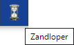
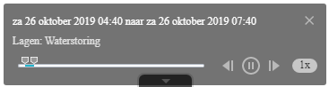

TimeSlider Plus Widget 1.0
Inleiding: de TimeSlider Plus Widget is afgeleid van de TimeSlider voor WAB. Met de TimeSlider Plus kun je gegevens op de kaart filteren in de tijd, bijvoorbeeld op een bepaalde dag (24 uur) of tussen twee zelf in te stellen tijdstippen. Door de TimeSlider Plus af te spelen kun je ook het verloop van bepaalde gegevens in de tijd bekijken.
for Web App Builder 2.8
Met de Zandloper Widget kun je - door het instellen van een referentiedatum - de tijdsperiode beperken die gebruikt wordt de voor tijdanalyse die je met de TimeSlider Plus gaat uitvoeren.
Deze functie werkt alleen op data waarvoor de tijdfunctionaliteit is ingesteld.

Zandloper Widget: Met de Zandloper kun je een referentiedatum instellen voor de tijdanalyse die je met de TimeSlider Plus gaat uitvoeren.
De functie van de referentiedatum is het beperken van de tijdsperiode die gebruikt wordt in de tijdanalyse. Standaard wordt deze periode beperkt tot de periode van één maand voor de genoemde datum tot één maand erna.
Klik op de Zandloper om de referentiedatum in te stellen
TimeSlider Plus Widget: Klik op de TimeSlider Plus. Onderaan het scherm verschijnt nu een schuifbalk voor de tijd.
Beweeg met de muis over deze schuifbalk, zodat deze openklapt:
